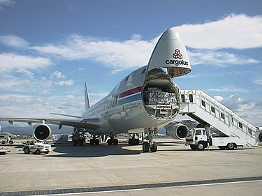

Polgári repülőgépek
(Utasszállító repülőgépek)

Teherszállító repülőgépek

Kísérleti repülőgépek

Katonai repülőgépek

Bombázó repülőgép
Boeing B-52 Stratofortress

Felderítő repülőgép
Pilóta nélküli repülőgépek (drónok)
RQ–4 Global Hawk
Légi utántöltő repülőgép
S–3 Viking

Lopakodó repülőgépek
F–22 Raptor